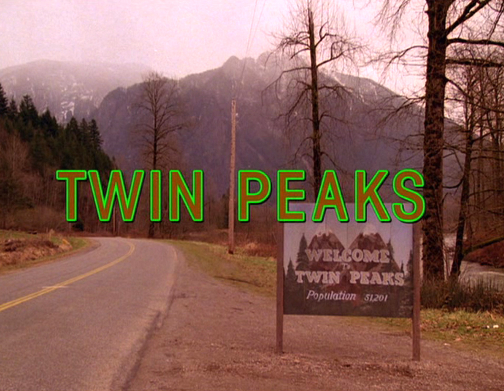
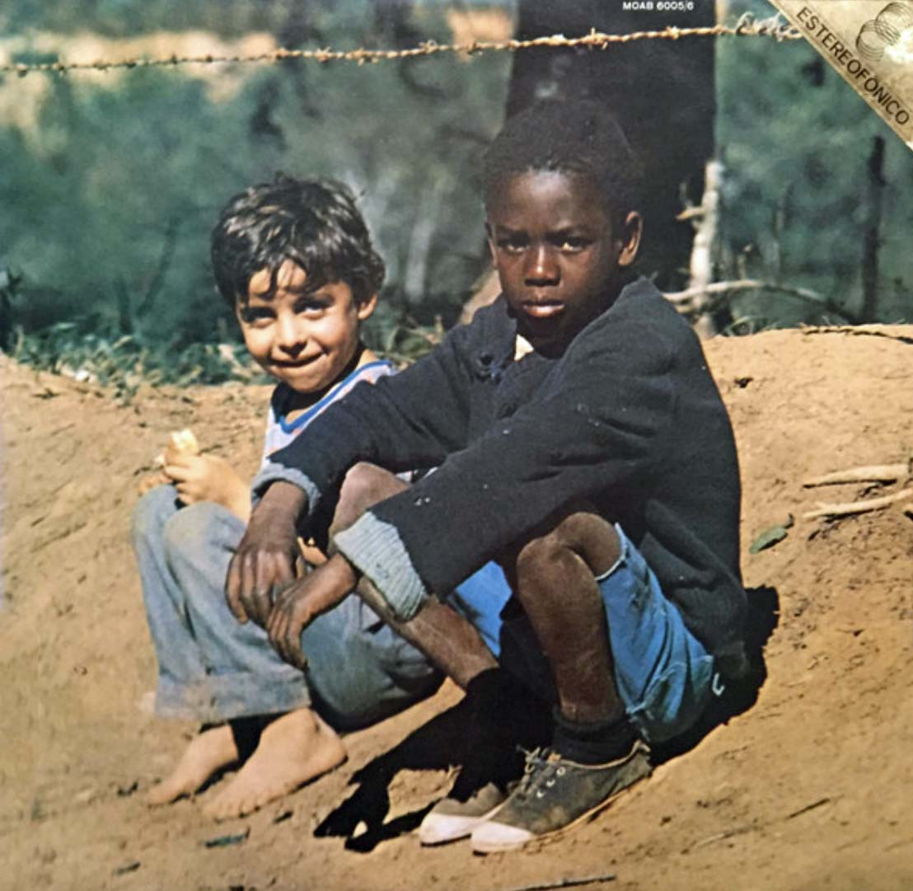

✨ Abraão Correia dos Santos ✨
Portfólio Pessoal | Desenvolvedor em Formação & Entusiasta de Tecnologia
Sobre Mim
Sou educador da rede pública estadual de Alagoas, com formação em Matemática pela UFAL. Atualmente, vivencio uma transição deliberada para o campo da Ciência da Computação e Tecnologia. Minha trajetória é marcada pela capacidade de analisar sistemas complexos e estruturar processos institucionais, habilidades que hoje redireciono para a construção de soluções tecnológicas sustentáveis e de alto impacto.
Objetivos e Ambições
Meu foco para 2026 está ancorado na conquista da autonomia de valor e na excelência técnica. Busco transcender a estabilidade burocrática em favor de uma carreira que permita escala, rentabilidade e a realização de projetos extraordinários. Acredito na tecnologia como a ferramenta capaz de viabilizar minha visão de mundo e minha liberdade material.
Capacidades e Competências
- Análise de Sistemas Educacionais: Mapeamento de fluxos e identificação de gargalos operacionais em instituições públicas.
- Pensamento Lógico-Matemático: Estruturação de raciocínios complexos voltados para a resolução de problemas e tomada de decisão.
- Produção Técnica e Normativa: Elaboração de protocolos, dossiês e documentação estruturada com rigor lógico.
- Gestão de Processos: Experiência em coordenação pedagógica e organização de rotinas administrativas complexas.
Projetos Atuais
- Transição para Ciência de Dados: Estudos focados em lógica de programação e análise de dados para o setor tecnológico.
- Grimório de 2026: Um sistema de governança pessoal que integra ciclos cronológicos, financeiros e simbólicos.
- Alquimia em Sala de Aula: Desenvolvimento de um projeto pedagógico sutil e significativo para estudantes da rede pública, focado em autonomia e pensamento crítico.
Curiosidades sobre mim
Minha série Favorita:
Twin Peaks

A trama começa com a descoberta do corpo de Laura Palmer, uma jovem popular na pacata cidade de Twin Peaks. O agente do FBI Dale Cooper é enviado para investigar o caso, mas logo percebe que a cidade esconde segredos sobrenaturais e bizarros que desafiam a lógica. Uma obra-prima de David Lynch que mistura suspense, surrealismo e drama.
Motivos para assistir:
- Atmosfera única e misteriosa
- Personagens complexos e memoráveis
- Trama intrigante e cheia de reviravoltas
- Direção artística e trilha sonora icônicas
Meu filme favorito:
A Pior Pessoa do Mundo
Um filme que retrata a vida de uma mulher que se vê em uma situação extremamente difícil, mas que encontra força para superar os desafios. O filme aborda temas como resiliência, identidade e a busca por um sentido mais profundo na vida.
Motivos para assistir:
- Atmosfera realista e emocionalmente impactante
- Personagem principal profundamente desenvolvida
- Exploração de temas sociais relevantes
- Trilha sonora que complementa a narrativa
Meu álbum favorito:
"Clube da Esquina" - Milton Nascimento e Lô Borges

Um álbum que mistura elementos da música brasileira contemporânea com influências do jazz e do rock. A produção é rica e os arranjos são elaborados, criando uma atmosfera envolvente e nostálgica.
Motivos para ouvir:
- Produção rica e arranjos elaborados
- Atmosfera envolvente e nostálgica
- Interpretação artística e emocional
- Contribuição para a música brasileira contemporânea
Contato e links
Entre em contato comigo através dos seguintes canais:
Email: abraaocorreias@gmail.com
GitHub |
Instagram |
last.fm |
Letterboxd